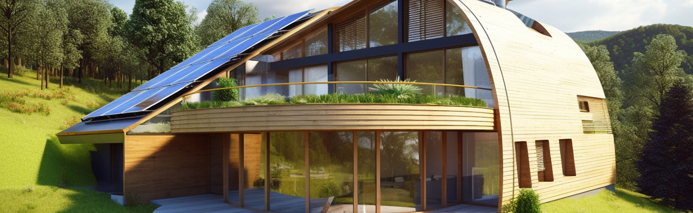

Sustainable Housing Trends: Integrating Renewable Energy Systems into Home Design
As the world grapples with the urgent need to address climate change, sustainable housing trends are increasingly shaping the way we design and build homes. A key component of this shift towards eco-friendly living is the integration of renewable energy systems directly into home design, revolutionizing the way we power our living spaces.
One of the most prominent trends in sustainable housing is the widespread adoption of rooftop solar panels. These photovoltaic systems harness the power of sunlight to generate electricity, reducing reliance on fossil fuels and lowering carbon emissions. With advancements in solar technology and falling installation costs, solar panels have become a mainstream feature of eco-conscious homes, offering long-term savings and environmental benefits.
In addition to solar panels, many homeowners are exploring other renewable energy options to power their homes. Wind turbines, for example, are gaining popularity in areas with suitable wind resources, providing a clean and reliable source of electricity. Similarly, geothermal heat pumps utilize the natural heat stored beneath the earth's surface to provide heating, cooling, and hot water, offering significant energy savings and environmental benefits.
Beyond energy generation, sustainable home design also encompasses energy-efficient features and passive design strategies to minimize energy consumption. High-performance insulation, energy-efficient windows, and smart home technologies are increasingly integrated into home designs to reduce heating and cooling loads and optimize energy usage. Additionally, passive solar design principles such as orientation, shading, and natural ventilation are employed to maximize natural light and thermal comfort while minimizing reliance on mechanical systems.
The rise of sustainable housing trends is driven not only by environmental concerns but also by economic factors and shifting consumer preferences. With growing awareness of climate change and the importance of sustainability, homebuyers are increasingly seeking out properties that prioritize energy efficiency and renewable energy integration. Furthermore, government incentives, rebates, and net metering programs are making renewable energy systems more accessible and affordable for homeowners, further driving adoption.
As the demand for sustainable housing continues to grow, architects, builders, and developers are embracing innovative design solutions that prioritize environmental performance and occupant well-being. By integrating renewable energy systems into home design and embracing energy-efficient technologies, we can create healthier, more resilient, and more sustainable communities for generations to come.
